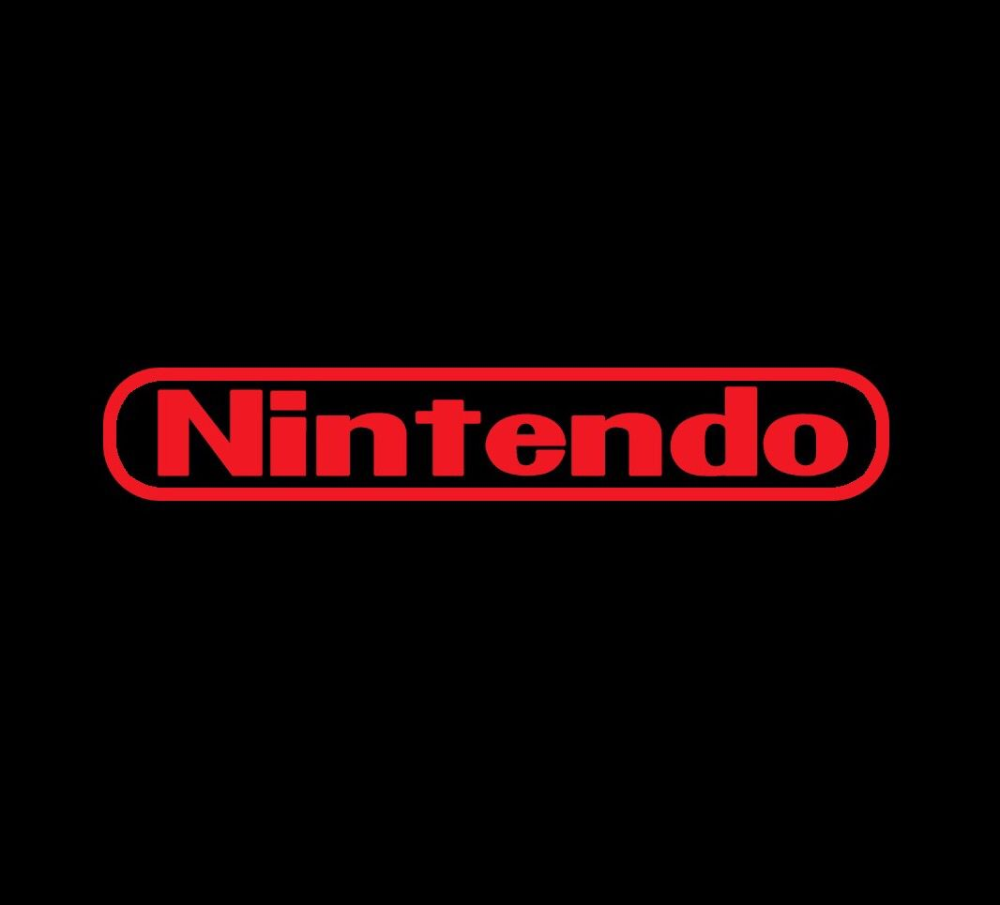
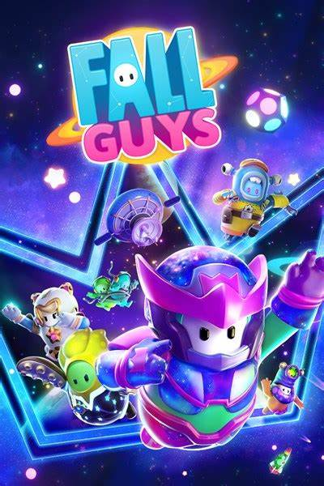

|
|
|
 |
|---|
Nintendo Company, Ltd. es una empresa de entretenimiento dedicada a la investigación, desarrollo y distribución de software y hardware de videojuegos, con sede en Kioto, Japón. Su origen se remonta a 1889, cuando comenzó a operar como Nintendo Koppai tras ser fundada por el artesano Fusajirō Yamauchi con el objetivo de producir y comercializar naipes hanafuda. Tras incursionar en varias líneas de negocio durante la década de 1960 y adquirir una personalidad jurídica de empresa de capital abierto bajo la denominación actual, en 1977 distribuyó su primera videoconsola en Japón, la Color TV Game 15.
Sus productos incluyen algunas de las consolas y títulos más influyentes y exitosos en la industria de los videojuegos, como la Nintendo Entertainment System, la Super Nintendo Entertainment System, la Wii y la Game Boy; así como los juegos Donkey Kong (1981), Super Mario Bros. (1985), The Legend of Zelda (1986), Metroid (1986), Fire Emblem (1990), Star Fox (1993) y Pokémon Red y Blue (1996), que dieron origen a sus correspondientes franquicias.
| Fifa. | Fall Guys. | Fortnite. | Minecraft. |
|---|---|---|---|
|
En general, los fans están muy descontentos por el trato que están recibiendo de parte de Electronic Arts, y opinan que el contenido nuevo como equipos y otros cambios menores debería lanzarse como una actualización a menor precio. 40€ por lo que parece un DLC parece algo desproporcionado para muchos.En cuanto el rendimiento, nada que envidiar a las demás plataformas |
Pero aquí un problema: la versión de Fall Guys para Nintendo no cumple con las expectativas al compararlo con las versiones de las consolas competidoras. Los movimientos en la Switch se sienten lentos y pesados. Calcular un salto es más complicado porque tu frijol no parece moverse con la misma fluidez que debería, con lo que algunos saltos son un juego de más suerte que precisión. |
'Fortnite' está perfectamente optimizado a las características técnicas de la plataforma de Nintendo. Esto hace que, a pesar de contar con 30 fotogramas por segundo y unas texturas de inferior calidad a las de PlayStation y Xbox, el juego se vea más fluído e incluso con más calidad que en determinadas configuraciones de ordenadores y móviles de gama media. |
Las características únicas de Switch la convierten en la plataforma ideal para aquellos que quieran llevar toda la libertad de acción de Minecraft a cualquier parte. De hecho, de todas las versiones portátiles (como la de Vita o la Pocket Edition para teléfonos móviles) esta es con diferencia la mejor, con una resolución de 720p y 60fps constantes... cuando jugamos en solitario. |
 |
 |  |
 |